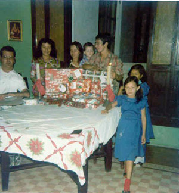
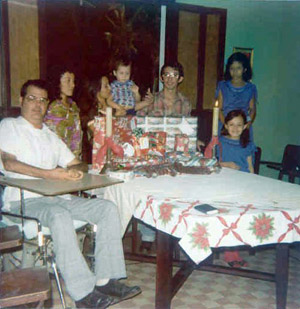

After the long, romantic walk that Gloria and I shared that November day, things moved along very nicely between us. I continued playing with the girls, going to the park frequently, buying munchies and other assorted trinkets to pass the time with. Sometimes we took in a movie or two. Across the street from the institute was a nice Chinese restaurant, the Longyin, where I treated my loved ones on more than one occasion. The evening of the 7th of December was especially memorable to me. As we parted, Sonia came up to me and gave me a sweet little good-night kiss on the cheek, as her way of saying "thank you". You can imagine how that made me feel. Sadly at the time, Areli did not behave in like manner. I had to accept that as another of those rocks that lie in the road to eventual happiness and peace in one's life. (I hasten to add that since than evening, she has given me many kisses, and has made me very proud of her. That's the result of growing up, isn't it?)
This is not to say that everything was rosy in those days. There were other obstacles that had to be confronted, like breakdowns in my wheelchair and Dodge van, my own visa papers, etc. Somehow, they always seemed to be resolved in a positive way - and as I look back now, almost as if Someone was looking after me, making sure I was adequately protected and cared for.
As we were now in the month of December, thoughts naturally began turning to Christmas. Therefore we made some shopping trips to the Tapachulan equivalent of a Sears or Wal-Mart - the Rialfer - to buy gifts for the girls and others. The girls had never seen the like in their days back in El Salvador, so this was a more-than-special treat for them. Shelf upon shelf full of things that little girls and boys always dream of having, some of which being beyond our financial means, others not. We did the best we could considering the times. The final gifts were wrapped by the 20th. Two evenings later, Sonia and Areli came to my room to see the gifts that were there and give them to traditional shaking to guess what might be inside.
We planned to celebrate together in one of the institute's classrooms the evening of the 24th. A large table was set up with a nice table cloth. The presents were placed on it, ready to be handed out. Though she didn't attend, Doña Anna proved to be a real Santa Claus for us, as she provided the food. It was quite a beautiful feast, too.
  After we were full of the good food, next came the presents. Eyes lit up as each gift was handed to its recipient, only to open even wider as the gift itself was revealed. Laughter and happiness was definitely the norm throughout the festivity. But never more so than when it came time for me to receive my gift from Gloria. Underneath the typical colorful wrapping paper was a small grey jewelry box, the type that might contain a ring or something of that sort. Gloria helped me open it to reveal yet another, even smaller ivory-colored box with a piece of red felt covering something deeper inside. When that was removed, what remained was a small bit of folded paper. She unfolded the paper and I read these words, written in red ink:
Tapachula 24 de diciembre de 1980
Terry quiero ser tu
esposa y la
madre de Tu hijo.
Te amoGloria Gladis Giron
Santa Claus himself could never have prepared a more wonderful gift than that for any man. At long last my remaining dream was about to come to fruition.
| Comments? Send e-mail. |
Back to top |
Go back to Contents |